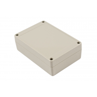
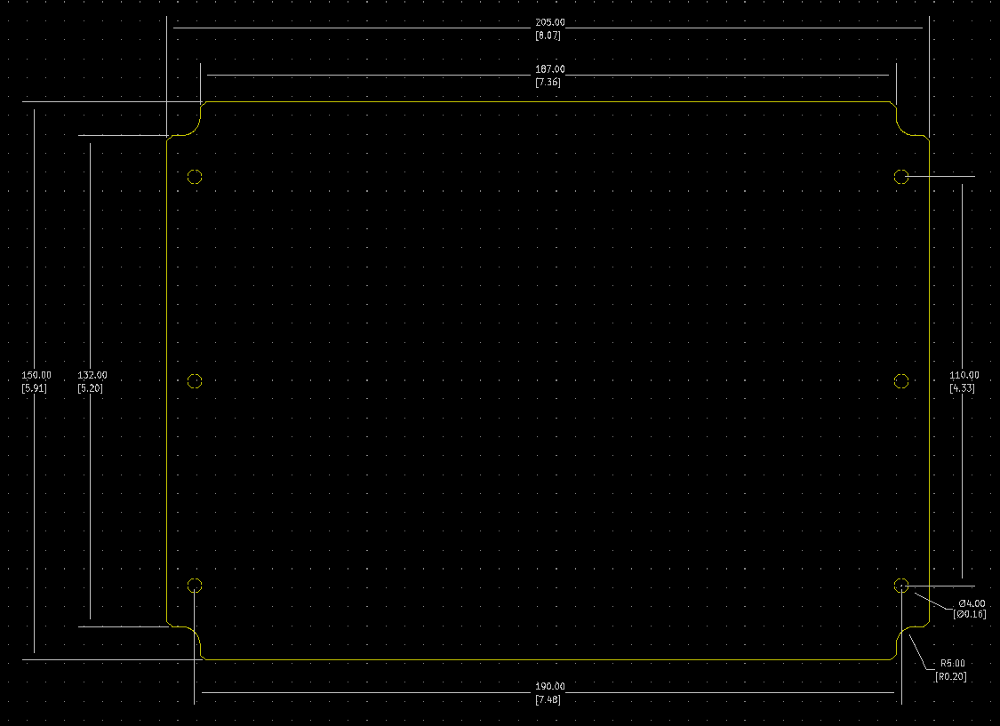

Project template containing the recommended board layout for Hammond Manufacturing RP145:
Gray, Clear Cover/Door: RP1465C - HM5812-ND
Gray: RP1465 - HM1113-ND
White, Off, Clear Cover/Door: RP1460C - 164-RP1460C-ND
White, Off: RP1460 - HM5811-ND
Gray, Clear Cover/Door: RP1455C - HM5810-ND
Gray: RP1455 - HM1112-ND
White, Off, Clear Cover/Door: RP1450C - 164-RP1450C-ND
White, Off: RP1450 - HM5809-ND
Features:
- Ideally suited for mounting printed circuit boards or components.
- Choice of two materials - General purpose ABS plastic or Polycarbonate (both materials carry a UL flammability rating of UL94 HB).
- Gasketed lid with two piece "tongue & groove" construction provides protection against access of oil, dust, and water.
- Rubber gasket is included and must be field installed.
- Lid includes smooth recessed area for membrane, label or silkscreen.
- Designed to meet IP 65.
- Lid is secured with self captivating M3.5 stainless steel machine screws (included), threaded into integral stainless steel bushings (for repetitive assembly & disassembly). All stainless steel hardware to avoid corrosion caused by dissimilar metals.
|

|

|
The "Dwgs.User" layer contains all critical dimmensions in milimeters[inches].
The "Edge.Cuts" layer contains the maximum board outline and holes to align with board standoffs.
PCB Preview:
